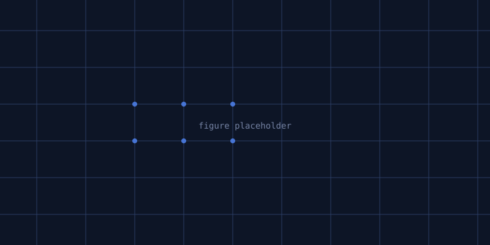
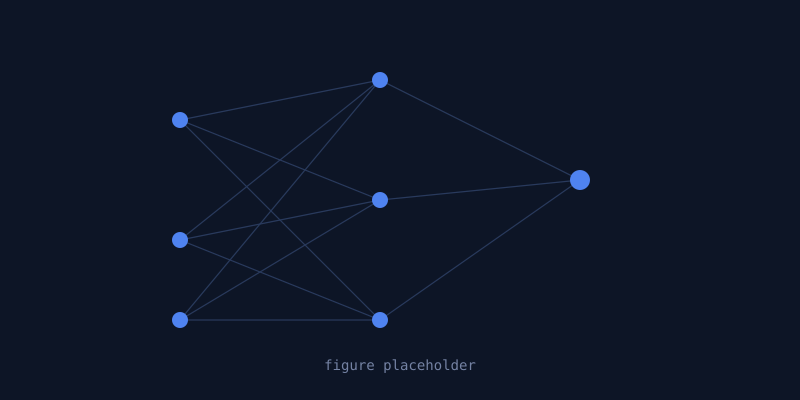

From atomic magnetism to planetary history

Micromagnetic modeling
I build 3D finite-element simulations to predict how magnetic minerals record and retain their magnetic signal over time.

Machine learning
I combine simulation data with machine learning models to connect microscopic mineral structure to laboratory measurements.

Meteorites & the origin of life
Working with meteorite samples and biological molecules, I study how magnetic minerals may have shaped conditions for life's emergence.
METHODS
3D Micromagnetics
Finite-element modeling
Finite-element modeling
Machine Learning
Structure-to-signal models
Structure-to-signal models
Paleomagnetism
Rock & meteorite measurements
Rock & meteorite measurements